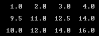

Nota que para trabajar con este método sólo
necesitas los coeficientes de las ecuaciones, y por esto es
importante el orden de estos, ya que su posición indica si se
trata de un coeficiente de X, Y o Z.
Esta matriz de coeficientes es la base que
utilizaremos para trabajar con el método de Gauss.
Utilizando la
estructura
#define, define las
constantes REN de 3 y COL de
4, que serán el número renglones y columnas respectivamente que
tendrá la matriz en el programa.
a) Capturar la matriz
Crea el
procedimiento
capturaMatriz que recibe
como parámetros una matriz de flotantes de REN por
COL. El procedimiento pedirá al usuario un valor flotante y lo
almacenará en la localidad correspondiente en la matriz. (hasta
que se llene la matriz se repite el mismo proceso).
Tomemos
como ejemplo las siguientes ecuaciones:
-
4X + 9Y + 12Z = 0
-
3X + Y + 5Z = 2
-
6X + 9Y + 2Z = 1
El formato
en que deberá llenar la matriz sería el siguiente:
ejemplo =
4.0 9.0 12.0 0.0
3.0 1.0 5.0 2.0
6.0 9.0 2.0 1.0
b) Imprimir la matriz
Crea el
procedimiento
imprimeMatriz, que recibe
como parámetros una matriz de flotantes de REN por
COL. El procedimiento desplegará en pantalla el
contenido de la matriz.
NOTA: Les sugiero que
para imprimir la matriz de flotantes utilicen el siguiente
formato:
printf(“%6.1f”, M[i][j])
Esto les permitirá tener 6 espacios a la izquierda y 1 solo decimal.

c)
Multiplicación de un escalar por un renglón
Crea el
procedimiento
renglonMatriz, que recibe
como parámetros una matriz de flotantes de REN
por COL, un entero renglon y un flotante
num.
El procedimiento multiplicará el renglon de la matriz por
el valor de num.
Ejemplo:
- Si la matriz tiene los siguientes valores:
2
5 6 4
3 4 5 1
7 8 5 6
- Después de llamar al procedimiento renglonMatriz
con el valor de renglon de 1 y el de num de 4.0,
los nuevos valores en la matriz deberán ser:
2
5 6 4
12 16 20 4
7 8 5 6
d) Intercambiar
renglones de la matriz
Crea el
procedimiento
intercambiaRenglones, que recibe como parámetros una
matriz de flotantes de REN
por COL, un entero renglon1 y un
entero
renglon2. El procedimiento intercambiará los valores del
renglon1 por los valores del renglon2
de la matriz.
Ejemplo:
- Si la matriz tiene los siguientes
valores:
2
5 6 4
3 4 5 1
7 8 5 6
- Después de llamar al procedimiento intercambiaRenglones
con el valor del renglon1
= 1
y el de renglon2 = 2, los nuevos valores
en la matriz deberán ser:
2 5 6
4
7 8 5 6
3 4 5 1
e) Sumar diagonal inversa
Crea la función
sumaDiagonalInversa, que
recibe como parámetros una matriz de valores flotantes de REN
por COL. La función regresará el resultado de sumar los
elementos contenidos en la diagonal inversa de la matriz.
Ejemplo:
- Para la siguiente matriz:
4.0
9.0 12.0
0
5.0
5.5 11.0 2.0
6.0 9.0
2.0
1.0
-
sumaDiagonalInversa
debe regresar como resultado: 20.0
f) Menú principal
Crea el procedimiento
menu que despliegue el siguiente menú en pantalla:
a. Capturar
matriz
b. Imprimir matriz
c. Multiplicar renglon de la
matriz
d. Intercambiar renglones de la matriz
e. Suma diagonal inversa
s. Salir
Pulse la opción deseada:
- Escribe el código
necesario dentro del main
para desplegar el menu y brindarle al usuario
la oportunidad de ejecutar cualquiera de las funciones o
procedimientos que han sido construidos:
- Utilizando el ciclo do-while cicle el
programa hasta que el usuario seleccione opción de Salir (s)
- Guarda el archivo con
el nombre: z_matrícula.c